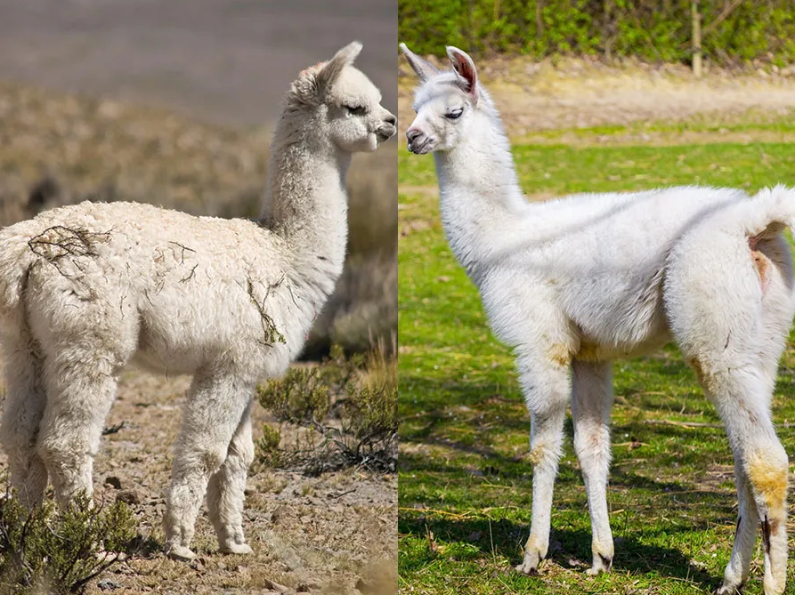

故事线
- 语言模型
语言模型（Language Model）的主要任务目标是：给定单词序列（句子）$w_1,\dots,w_n$ ，预测这个单词序列的概率 $p(w_1,\dots,w_n)$。这个概率的意义根据任务的不同而不同，最常见的比如“一个句子是人话”的概率，再比如是一句话不同翻译结果的概率。
应用链式法则，我们可以将问题转化成求 $p(w_i \vert w_1,\dots,w_{i-1})$，即给定前 i-1 个词，生成下一个词的概率。
- N-gram
这里还属于统计学模型的 NLP 时代。N-gram 用 N-1 阶马尔可夫假设来简化后验概率，比如说 N=3 的话，我们就有近似 $p(w_i \vert w_1,\dots,w_{i-1}) \approx p(w_i \vert w_{i-2},w_{i-1})$。然后直接用频率估计概率，拟合每个 $p(w_i \vert w_{i-2},w_{i-1})$（相当于每个这个条件概率都是模型里的参数）。
一个语言模型的单词全集称为词典 $w_i \in V$。因此可以知道 N-gram 的参数个数是 $\vert V \vert^{N-1}$ 级别的。
- 前馈神经网络
这个时间段主要有几个比较大的改进。一是 Word Embedding。传统方法直接将词转成词典空间上的 one-hot 向量，任意两个词在空间上的距离都是相等的（超立方体），其实是丢失了一些信息；同时 one-hot 会造成维数爆炸。新的方法通过各种方式去训练一个更加低维映射，使得 Embedding 的结果在语义上更加合理，且更加高效。
以及引入神经网络的方式解决参数量过大的问题（众所周知，神经网络很适合拟合参数量大的预测概率的模型）。
- RNN
语言模型很符合序列模型的问题假设，而 RNN 和 LSTM 都是很经典的序列模型。RNN 的核心思路就是循环，也就是不断地使用相同的权重（比如得到 $t$ 时刻输出后，再结合新的 token 一起作为输入喂入，得到 $t+1$ 时刻输出）。这样理论上就可以预测无限长的句子。相比之前的方法还有个好处就是，RNN 理论上可以利用前面的所有信息（虽然会随着传播衰减等等）。
LSTM 通过一些奇妙的设计，加入了遗忘机制，克服了 RNN 的梯度弥散、爆炸问题。
- Seq2Seq 与 Encoder-Decoder 架构
传统的 RNN 要求输入和输出必须是等长的，这对于很多翻译任务是不大合理的。Seq2Seq 架构通过引入中间状态向量 Context 突破了这个限制。我们训练一个 Encoder 将不等长数据转化为等长数据，然后使用 RNN 或者 LSTM 来映射到另一个等长数据，最后再通过 Decoder 转化为目标数据（又可能不等长了）。
Encoder 负责把输入变成中间语义表示：$C = F(x_1, x_2, \dots, x_m)$，Decoder 负责根据中间语义表示生成输出：$y_i = G(C, y_1, \dots, y_{i-1})$。
- Attention
注意力机制的关键点在于让不同的单词对 target 的贡献不同（形象地说就是不同的注意力了）。上述的 E-D 架构如果用 RNN 这样的模型，Decoder 过程可能是这样的
由于 � 是 decoder 统一被训练出来的 decode 函数，我们在这个层面上可以认为它对 $y_1, \dots, y_{i-1}$ 是不加区分的，在长句时这种方法的效果就比较差。
给 E-D 架构引入注意力机制后，我们不再把输入编码为一个 $C$ ，而是根据当前单词生成 $C_i$ 。Decode 过程就变成了 $y_1= G(C_1),\ y_2 = G(C_2, y_1),\ y_3 = G(C_3, y_1, y_2)$ 。
- Transformer
Transformer 一大特点是自注意力机制（Self-Attention），也就是一个句子对自己本身的 attention（如句子里的代词 it 对它真正指代的那个东西，注意力就会很大）。
架构
大多数 LLM 都和 Transformer 架构离不开关系。Transformer 在原始论文《Attention Is All You Need》提出时包含 Encoder 和 Decoder。
总的来讲主流有三种架构：
- Encoder-Decoder。代表有 BART/T5。这个架构（也就是之前说的 seq2seq 架构）很适合做翻译等任务。
- Encoder-Only。代表有 BERT。属于自编码模型（Auto-Encoding Models）。也被称作掩蔽语言模型（Masked Language Model）。这种模型可以看到整个句子，模型需要预测句子中被 MASK 掉的 token。
- Decoder-Only。这个就比较多了，包括 GPT、LLaMA 都是。属于自回归模型（Auto-Regressive models）。它们适合做生成任务（Generate）。它们也被称为因果语言模型（Causal Language Model），这是因为这类模型是从左到右地预测下一个 token。为了保证模型不作弊，这种模型通过用对角阵 mask 的方法来防止作弊（偷看 i+1 token）。
PS：找一些资料时候发现 decoder-only 好像也有不属于 CLM 的。这里就不细分了。
最近GPT做的比较好，所以大家都把目光放到 Decoder-only 上。其实可以看出远古时代的模型（n-gram）也是这种自回归模型。
Self-Attention
self-attention 模块会把输入向量 $x_1, \dots, x_n$ 映射成向量 $z_1, \dots, z_n$。
首先，对于每个输入 $x_i$ ，我们产生三个相应的向量 $q_i, k_i, v_i$（query，key，value）。这是通过一个线性变换实现的，即分别乘上一个训好的参数矩阵 $W^Q, W^K, W^V$ 。这三个向量的维度一般小于输入的维度（不是必要的，但是往往是这样）。注意对于不同的 i，它们都是用这三个参数矩阵去变换，所以这里不同位置的 token 其实已经有信息交流了。
然后我们会把 q 和 k 给互相乘起来，所以就是 $n \times n$ 的 $q_i \cdot k_j$。这里其实就是在计算 query 和 key 的匹配程度了。这个东西通常要对维度的根号 scale 一下，并且取个 softmax。最终的样子是 $\text{softmax}(\frac{q_i k_j}{\sqrt{d}})$。可以直接把这个理解为 query i 到与 key j 之间的匹配度。
然后计算 z 的原理就是，取加权的 value 和。比如说 $z_1 = w_{11} v_1 + w_{12} v_2$ （假设总共就两个 tokens），这里 $w_{ij}$ 就是指上面的 i 到 j 的匹配度。理解上，就是匹配度越高的，我们取这个 token 的 value 越多。
然后写成矩阵计算的形式，就是非常经典的
。
在计算的时候还有一个 mask 部分，对于想要 mask 的地方我们会取 -inf（这样 softmax 出来就是 0）。mask 的作用在后面会讲。
1 | def attention(Q, K, V, mask): |
- Multi-Headed Attention（多头注意力机制）。
如果用很多组 $W^Q, W^K, W^V$，就可以得出不同的 Q，K，V。一般的模型里会有个 num_heads 的参数，意思就是注意力使用几头的。这样做的好处就是可以从不同的角度看待 Attention，学到更丰富的信息。
那么最后怎样把不同 heads 的输出合起来呢？很简单，直接 concat 成一个长向量，然后经过一个矩阵降维回去。
- Multi-Query Attention（MQA）
这是这篇文章里提出的一种能够高效加速 decoder inference 的方法：https://arxiv.org/pdf/1911.02150.pdf。
简单来说，相比 MHA，MQA 的不同 head 之间共享 key value 矩阵，只保留不同的 Q，所以称为 multi-queries。
Tokenizer
我们用 LM 的时候通常都要事先定义一个 tokenizer（分词器），然后我们会将 raw text 喂进去，得到 encoded 的数据再喂入 LM。注意，一个很经常被弄混的一点是，这里的 encode 和 Encoder-Decoder 架构的 encode 不是一回事！（当然和 quantization 那边更不是一回事了）。
简单来说，一个 tokenizer 干的事情就是把 raw text 里的文本分成一个个 token，然后映射到整数（唯一 ID，在 vocab size 的范围内）。Token 的粒度有大有小，从 character-level 到 word-level 的都有。注意，Tokenizer 一般不包含 embedding（一般是在模型里做的），所以过程应该是 raw_text -> input_ids -> input_tensor。
Tokenizer 的一个目的是保证词典尽量小。 除了 encode，tokenizer 通常还负责 decode，也就是整数转化为有意义的字符串。
Embedding
Transformer 里的 Embedding 包括 Word Embedding 和 Position Embedding，embed 结果是两者直接相加，这是因为词和词的位置都是一种有效信息需要考虑。Embedding 本身其实就是把 tokenized 之后的 id 映射到向量空间（并且在某种标准下，这些 tokens 的距离是有一些意义的）。所以 Embedding 本身也是要训练的。
Word Embedding 就是把词本身作为信息 embed 进去，所以它是一个 0~vocab_size-1 之间的整数映射到 embed 空间；而 Position Embedding 当然就是把 0~max sequence length-1 映射到 embed 空间。
Mask
Transformer 里的 mask 主要有两类：padding mask 和 sequence mask。前者就是当你把同一个 batch 的句子都 padding 成同一长度时，要把 padding 上的空白符号 mask 掉。而 sequence mask 的目的是防止 Decoder “看到未来而作弊”。这里我们只需要 Mask 掉 QK 和 V 之间的乘法就行了，这里是一个类似 “查询” 的过程，mask 掉的话就可以保证对 mask 部分注意力为 0。
具体来讲，我们知道在 Attention 部分，我们做了很多矩阵乘法，并且很多是对 sequence 这一维做的，如果不用 sequence mask 的话过去未来的消息都会混杂在一起，这并不科学。考虑第 i-th token 只能看到前 i-1 的消息，我们就应该把 i+1 之后的位置都 mask 掉，最后这就是一个下三角矩阵。
在 nanoGPT 里实现是这样的，看代码可以看出是生成了一个大小为 (1, 1, s, s) 的下三角，其中 mask 掉的部分之后会被设为 -inf，进而在 softmax 之后变成 0。
1 | # causal mask to ensure that attention is only applied to the left in the input sequence |
GPT
GPT（Generative Pre-trained Transformer）到目前为止一共有4代。
GPT或者GPT-like具有相似的decoder-only架构，通常包括一个输入的 Embedding 过程，和一堆 Transformer Block。每个 Transformer Block 又包括 Dense、Self-Attention 和一个前馈神经网络（也即一些 Dense 层）。
- GPT-2 的一些参数（from Hugging Face）
可以大概对模型的样子和配置有些感觉。
1 | vocab_size: 词表的大小 |
- 计算步骤和 Shape 分析（参考 GPT2 和 nanoGPT）
一个对齐 hugging face 接口的 forward 输入一般有：
1 | input_ids: (batch_size, sequence_length) # encode 之后的输入 |
参考 nanoGPT 的结构分析数据过程。这是一个接近 GPT2 的实现（不过很遗憾，没有 KV Cache）。然后经过 token embedding 和 position embedding，input_ids 会变成
1 | tok_emb = wte(idx) # token embeddings of shape (b, s, n_embd) |
wte: word to embedding, wpe: word position embedding.
这里 b 是 batch size，s 是 sequence length。经过 drop 之后，输入就会穿过一个个 Transformer block。每个 block 由 LayerNorm - CasualSelfAttention - LayerNorm - MLP 组成。
LayerNorm 不改变 shape。我们来看 SelfAttention 部分。在 nanoGPT 中，Q，K，V 的 shape 都是 (b, n_head, s, n_embd // n_head)。 nanoGPT 这里的处理方式是把输入用一个 Linear 投成 3 倍大，然后 split 成 qkv。回忆一下 Attention 的计算公式，shape 变化过程就是（hs = n_embd // n_head）。
1 | (b, nh, s, hs) @ (b, nh, s, hs).T = (b, nh, s, s) # softmax(Q @ K) |
最后要 concat 起来。由于我们本来就是放一起处理的，只需要 reshape 成 (b, s, n_embd) 就好，最后还会经过一个不改变 shape 的 output projection。
然后在穿过 n_layer 个 Transformer block 后，还需要经过一个 MLP（Feed Forward），通常是一个将 x 先放大再缩小的过程，具体来说就是先 n_embd -> n_inner 再 proj 回来，通常 n_inner=4*n_embd。
然后就是 output 的 embedding，在 nanoGPT 中称为 lm_head，实际上就是一个从 n_embd 到 vocal_size 的 Linear。代码里这个 embedding 的部分 input/output 参数是共享的（wte 和 lm_head，这个 technique 有个名字叫 Weight Tying）。这样输出的 shape 就变成了 (b, s, vocal_size)。
如果只是做 inference 的话，可以看出我们只需要取 sequence length 这一维的最后一个地方（s 这个维度的每个位置其实都是 “利用前面的 s-1 个 token 预测下一个 token 的概率”。当然这里有很多重复计算，所以有 KVCache）。然后 inference 时候我们只需要取 (b, 1, vocal_size) ，这里得到的是一个词表上的概率分布。到这里 model 部分就算结束了。
下面是一个来自 陈乐群 (Lequn Chen) Blog 的架构图，注意到模型里有的地方还有一些跳跃链接（ResNet 里的那种）。

KV Cache
我们在使用 GPT 时会给它提供一个 prompt。模型会以其为输入生成第一个 token，而后我们将新 token append 到 prompt 后面继续作为输入，得到下一个 token，不断得到后续的词。
Key observation：自回归过程中每次 inference 过程的输入只比下次多一个 token，因此我们一定能够复用计算结果。实际上，GPT 里和之前的 tokens 有关的只有 self-attention 层，因此我们其实只需要 cache 对于前面所有的 tokens 的有关数据就好了，这样我们每次其实都只要输入新的 token（而不用再和前面的 token 拼在一起），就能利用 cache 结果做 inference。
Attention block 的输入是 Q，K，V 和 mask。我们可以直接 cache 之前输入的 Q，K，V 即可。但其实，我们不用 cache Q！因为我们只关心新进来的 token，所以只需要考虑 Q 的新的一行就行了。画了一个比较丑的示意图，或者也可以看Speeding up the GPT - KV cache。

注意，我们只是想要预测一个新 token，但是直接令 prompt 为这个 token 又不行（因为还是得基于前面的信息），所以我们希望在保留前面信息的同时令输入只是这个新 token。在这种考虑下，只需要 cache K 和 V 的部分值就行。
现在模型的工作流程就是：以其为输入生成第一个 token，同时返回 KV Cache。第一次一般称为 initial stage。而后我们用这个 token 和 KV Cache 继续作为输入，得到下一个 token 和更新后的 KV Cache。这样不断得到后续的词，这个过程称为自回归（auto regression）。
生成输出
按上面说的，通常的自回归模型是一个一个 token 生成输出的。那么生成的规则是怎样的呢？最简单的当然就是贪心生成：选概率最大的那一个。
在 nanoGPT 中，inference 出来的那个长度为 vocab_size 的概率分布向量会先经过 temperature 来 scale，然后选择 topk crop 掉，再对 topk 的这些 tokens 根据概率分布来选。
以及一个比较通用的方法是 Beam Search。它的核心思想就是：我们的目的是要接下来生成的若干个 tokens 连乘起来的概率最大，所以每一步贪心可能并不是最优解。那么这样我们就假设一个 beam_width，也就是带一个窗口长度，在这个长度的 scope 下用贪心。
Reference
- 蝈蝈：Huggingface🤗NLP笔记2：一文看清Transformer大家族的三股势力
- The Illustrated Transformer
- The Illustrated GPT-2 (Visualizing Transformer Language Models)
- Self-Attention和Transformer - machine-learning-notes
- GitHub - Mooler0410/LLMsPracticalGuide: A curated list of practical guide resources of LLMs (LLMs Tree, Examples, Papers)
- Speeding up the GPT - KV cache
- OpenAI GPT2
- GPT-NeoX
- 多头注意力：十分钟读懂Beam Search 1：基础